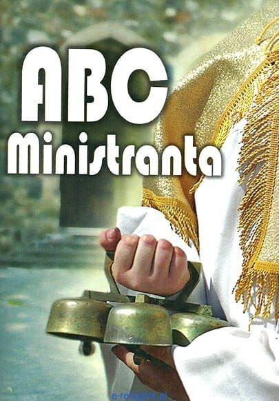

ABC Ministranta

Zawołanie ministranckie
- Króluj nam Chryste!
- Zawsze i wszędzie!
Hymn ministrancki – Króluj nam Chryste!
-
Króluj nam Chryste, zawsze i wszędzie
to nasze rycerskie hasło.
Ono nas zawsze prowadzić będzie
i świecić jak słońce jasno. -
Naprzód przebojem młodzi rycerze
Do walki z grzechem swej duszy.
Wodzem nam Jezus w Hostii ukryty,
Z nim w bój nasz zastęp wyruszy. -
Pójdziemy naprzód, naprzód radośnie
Podnosząc w górę swe czoła.
Przed nami życie rozkwita w wiośnie
Odważnie, bo Jezus woła.
Najważniejsze modlitwy liturgicznej służby ołtarza
Modlitwa przed Mszą Świętą
K: Wspomożenie nasze w imieniu Pana
W: Który stworzył niebo i ziemię
Oto za chwilę przystąpię do ołtarza Bożego, do Boga, który rozwesela młodość moją.
Do świętej przystępuję służby. Chcę ją dobrze pełnić.
Proszę Cię Panie o łaskę skupienia. By myśli moje były przy Tobie.
By oczy moje były zwrócone na ołtarz, a serce moje oddane tylko Tobie. Amen.
K: Błogosław Boże
W: Posłudze naszej
Modlitwa po Mszy Świętej
Boże, którego dobroć powołała mnie do Twej służby, spraw, bym uświęcony uczestnictwem
w Twych tajemnicach przez dzień dzisiejszy i całe me życie szedł tylko drogą zbawienia.
Przez Chrystusa Pana naszego. Amen.
K: Błogosławmy Panu
W: Bogu niech będą dzięki
Patroni liturgicznej służby ołtarza
Zasady, których powinien przestrzegać każdy ministrant
- Ministrant kocha Boga i dla Jego chwały wzorowo spełnia swoje obowiązki.
- Ministrant służy Chrystusowi w ludziach.
- Ministrant zwalcza swoje wady i pracuje nad swoim charakterem.
- Ministrant rozwija w sobie życie Boże.
- Ministrant poznaje liturgię i żyje nią.
- Ministrant wznosi wszędzie prawdziwą radość.
- Ministrant przeżywa Boga w przyrodzie.
- Ministrant zdobywa kolegów w pracy i zabawie dla Chrystusa.
- Ministrant jest pilny i sumienny w nauce i pracy zawodowej.
- Ministrant modli się za Ojczyznę i służy jej rzetelną pracą.
Wskazania dla Liturgicznej Służby Ołtarza
- Pełniący posługę przychodzą do kościoła przynajmniej 15 minut przed rozpoczęciem Liturgii. Czas ten przeznaczamy na modlitwę, na duchowe przygotowanie się do uczestnictwa w Eucharystii lub nabożeństwie oraz na ubranie się, przygotowanie potrzebnych rzeczy, pomoc w ubraniu celebransa.
- Przychodząc do kościoła udają się najpierw przed tabernakulum, aby oddać pokłon Chrystusowi. Powinni więc wchodzić głównym wejściem do kościoła. Jeżeli ktoś wchodzi przez zakrystię, to nie przyklęka w kąciku, lecz udaje się przed ołtarz, gdzie jest obecny Gospodarz tego domu.
- Udział służby liturgicznej we Mszy Świętej nie może ograniczyć się do wykonywania powierzonych im czynności. Posługa ma ich prowadzić do pełniejszego włączania się w święte obrzędy, aby uczestniczyć w nich „świadomie i owocnie”.
- Spełnianie określonych czynności w Liturgii nie może mieć charakteru występu, lecz posługi. Należy więc podkreślać przekazywaną treść, a nie samego siebie.
- Wszyscy członkowie zespołu liturgicznego pełniący posługę w prezbiterium biorą udział w procesji wejścia i uczestniczą w całej Liturgii na swoich miejscach. Do zakrystii wychodzą tylko w razie konieczności.
- Swoje czynności wykonują we właściwym czasie, bez pośpiechu, nigdy przed zakończeniem czynności poprzedzającej.
- Do Komunii Świętej przystępują pierwsi przed pozostałymi wiernymi.
- Swoją postawą i zachowaniem dają wiernym przykład właściwego i pełnego uczestnictwa w Eucharystii.
Msza Święta - ofiara i uczta
Obrzędy wstępne
- wejście
- pozdrowienie ołtarza i zgromadzonego ludu
- akt pokuty
- wezwanie Chrystusa - Kyrie, eleison
- hymn: Chwała na wysokości Bogu (w niedziele i święta)
- kolekta
Liturgia słowa
- pierwsze czytanie
- psalm responsoryjny
- drugie czytanie
- aklamacja przed Ewangelią
- Ewangelia
- homilia
- wyznanie wiary
- modlitwa powszechna
Liturgia eucharystyczna
- przygotowanie darów
- modlitwa nad darami
- modlitwa eucharystyczna:
- prefacja
- aklamacja Święty, Święty...
- epikleza
- opowiadanie o ustanowieniu Eucharystii i konsekracja
- anamneza
- ofiarowanie
- modlitwy wstawiennicze
- końcowa doksologia Przez Chrystusa...
- obrzędy Komunii Świętej:
- Modlitwa Pańska Ojcze nasz
- obrzęd pokoju
- łamanie Chleba
- Baranku Boży
- Komunia Święta
- puryfikacja - oczyszczenie kielicha i pateny
- modlitwa po Komunii Świętej
Obrzędy zakończenia
- błogosławieństwo
- rozesłanie
Bibliografia
- Duszyński, Grzegorz (red.) ABC ministranta. Poznań: Wydawnictwo Hlondianum, 2015. ISBN: 978‑83‑62959‑81‑5. 64 s. Oprawa miękka.
- https://ksiegarnianamiodowej.abstore.pl/ksiazki-obce-abc-ministranta,c2,p4025,pl.html [dostęp 2026-02-26.]